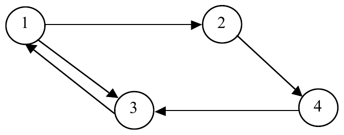

The 2000 ACM Programming Contest World Finals sponsored by IBM · Problem F
It was recently reported that, on the average, only 19 clicks are necessary to move from any page on the World Wide Web to any other page. That is, if the pages on the web are viewed as nodes in a graph, then the average path length between arbitrary pairs of nodes in the graph is 19.
Given a graph in which all nodes can be reached from any starting point, your job is to find the average shortest path length between arbitrary pairs of nodes. For example, consider the following graph. Note that links are shown as directed edges, since a link from page a to page b does not imply a link from page b to page a.

The length of the shortest path from node 1 to nodes 2, 3, and 4 is 1,1, and 2 respectively. From node 2 to nodes 1, 3 and 4, the shortest paths have lengths of 3, 2, and 1. From node 3 to nodes 1, 2, and 4, the shortest paths have lengths of 1, 2, and 3. Finally, from node 4 to nodes 1, 2, and 3 the shortest paths have lengths of 2, 3, and 1. The sum of these path lengths is 1 + 1 + 2 + 3 + 2 + 1 + 1 + 2 + 3 + 2 + 3 + 1 = 22. Since there are 12 possible pairs of nodes to consider, we obtain an average path length of 22/12, or 1.833 (accurate to three fractional digits).
The input data will contain multiple test cases. Each test case will consist of an arbitrary number of pairs of integers, a and b, each representing a link from a page numbered a to a page numbered b. Page numbers will always be in the range 1 to 100. The input for each test case will be terminated with a pair of zeroes, which are not to be treated as page numbers. An additional pair of zeroes will follow the last test case, effectively representing a test case with no links, which is not to be processed. The graph will not include self-referential links (that is, there will be no direct link from a node to itself), and at least one path will exist from each node in the graph to every other node in the graph.
For each test case, determine the average shortest path length between every pair of nodes, accurate to three fractional digits. Display this length and the test case identifier (they’re numbered sequentially starting with 1) in a form similar to that shown in the sample output below.
1 2 2 4 1 3 3 1 4 3 0 0 1 2 1 4 4 2 2 7 7 1 0 0 0 0
Case 1: average length between pages = 1.833 clicks Case 2: average length between pages = 1.750 clicks